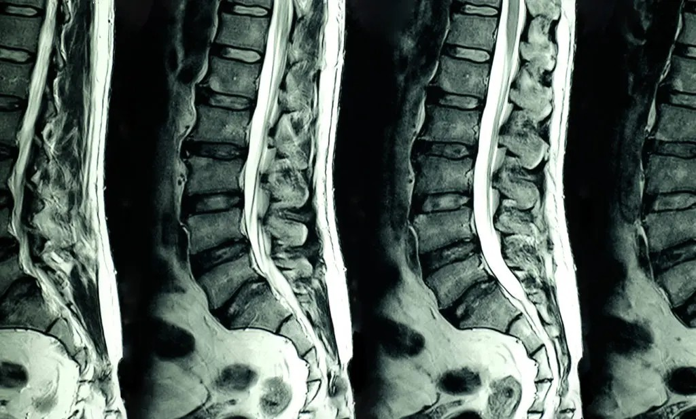
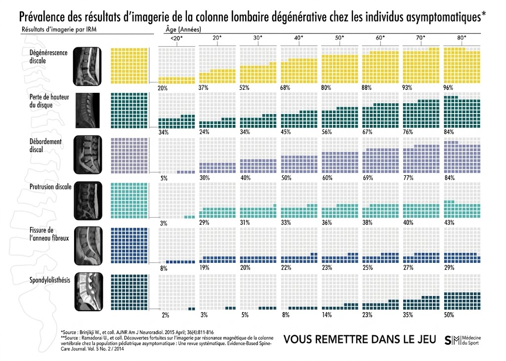

Mon IRM montre une hernie : faut-il s'inquiéter ?
Passer un examen d'imagerie et découvrir des termes comme « hernie discale », « protrusion » ou « discopathie » provoque souvent de l'inquiétude. Pourtant, la présence d'une anomalie anatomique à l'image ne signifie pas nécessairement qu'elle est la cause de vos douleurs.

Ce que dit la science : l'étude de Brinjikji et al. (2015)
En 2015, une revue systématique majeure menée par W. Brinjikji et son équipe a analysé les données d'imagerie rachidienne de 3 110 individus n'ayant aucune douleur au dos (sujets totalement asymptomatiques). Les résultats mettent en évidence la prévalence élevée d'anomalies morphologiques liées au vieillissement naturel (Brinjikji et al., AJNR) :
- Dégénérescence discale : présente chez 37 % des personnes de 20 ans, et chez 96 % des personnes de 80 ans sans symptôme.
- Protrusion discale : retrouvée chez 29 % des sujets de 20 ans, et chez 84 % des personnes de 80 ans asymptomatiques.
- Perte de hauteur discale : observée chez 24 % des individus de 20 ans et 84 % à 80 ans.
- Fissure de l'anneau fibreux (annular tear) : présente chez 19 % des sujets de 20 ans et 29 % à 80 ans.
Ces données confirment les travaux princeps de Jensen et al. (1994) dans le New England Journal of Medicine, montrant que 52 % des sujets sans douleur présentaient déjà une protrusion ou une hernie discale à l'IRM.

Pourquoi l'examen clinique prime sur l'image
Une imagerie médicale révèle une structure anatomique à un instant T, mais ne précise pas si cette structure est la source exacte des nocicepteurs activés ou de la douleur ressentie. C'est pourquoi la corrélation anatomo-clinique est indispensable : deux personnes présentant une image identique de hernie discale L5-S1 peuvent avoir des tableaux cliniques totalement divergents.
L'évaluation en kinésithérapie s'attache à croiser vos symptômes avec l'examen mécanique (mouvements modifiant la douleur, tests neurologiques de conduction). L'imagerie est un outil complémentaire d'exclusion ou de confirmation, et non un diagnostic autonome (Chou et al., Annals of Internal Medicine, 2011).
Références scientifiques & Littérature
- Brinjikji W, Luetmer PH, Comstock B, Bresnahan BW, Chen LE, Deyo RA, et al. Systematic literature review of imaging features of spinal degeneration in asymptomatic populations. American Journal of Neuroradiology (AJNR), 2015; 36(4):811-816.
- Jensen MC, Brant-Zawadzki MN, Obuchowski N, Modic MT, Malkasian D, Ross JS. Magnetic resonance imaging of the lumbar spine in people without back pain. New England Journal of Medicine, 1994; 331(2):69-73.
- Chou R, Qaseem A, Owens DK, Shekelle P. Diagnostic imaging for low back pain: advice for high-value health care from the American College of Physicians. Annals of Internal Medicine, 2011; 154(3):181-189.
- Jarvik JG, Hollingworth W, Heagerty PJ, Haynor DR, Boyko EJ, Deyo RA. Three-year incidence of low back pain in an initially asymptomatic cohort: clinical and imaging risk factors. Spine, 2005; 30(13):1541-1548.